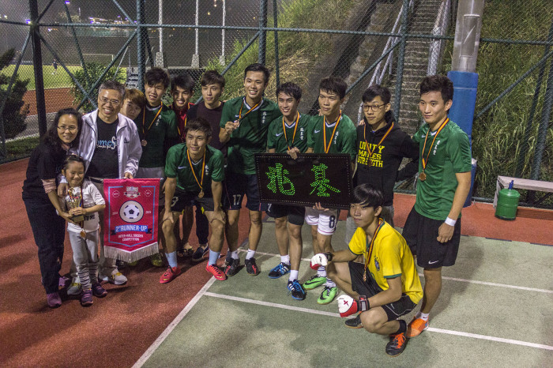

2019-2020 Edmond Ko Cup Awards:
Athletics – Women’s 4x100M (2nd Runner Up)
2018-2019 Edmond Ko Cup Awards:
Aquatics – Women’s relay (2nd runner up)
2016-2017 Edmond Ko Cup Awards:
Inter-hall Singing Contest (Solo Champion)
Photography Competitions (Mention of Merit)
Tennis (1st Runner-up)

2015-2016 Edmond Ko cup Awards:
Singing Contest-Group (Champion)
Football (2nd runner up)
Athletics –Women’s 4x100M (2nd runner up)
2014-2015 Edmond Ko Cup Awards:
Aquatics- Women’s relay (3rd runner up)
Athletics- Men’s relay (3rd runner up)
Soccer (2nd runner up)
Table Tennis (3rd runner up)
Singing Contest (Most Creative Award)
2013-2014 Edmond Ko Cup Awards:
Aquatics- Women’s relay (2nd runner up)
Athletics- Men’s relay (Champion)
Soccer (Champion)

2011-2012 Edmond Ko Cup Awards:
Badminton-Men (Champion)
2009-2010 Edmond Ko Cup Awards:
Athletics- Men’s relay (Champion)
Badminton-Men (Champion)
2008-2009 Edmond Ko Cup Awards:
Photography (Champion)
2007-2008 Edmond Ko Cup Awards:
Badminton (Champion)
Singing Contest (Champion)
2006-2007 Edmond Ko Cup Awards:
Basketball (Champion)
Badminton (Champion)
Athletics- Woman’s relay(Champion)